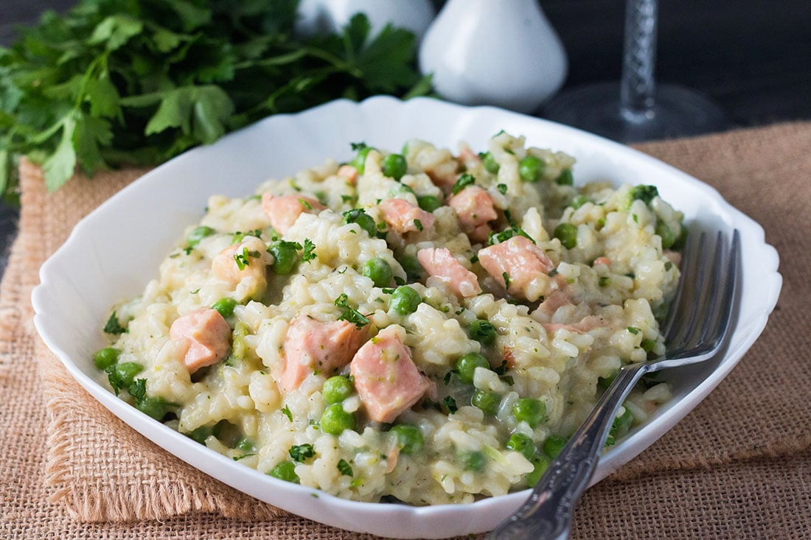

Home
Salmon Risotto

Description
Indulge in a comforting dinner of creamy rice and tender salmon. Enhance the flavors with a hint of lemon juice
and
parmesan, creating a delightful and nutritious meal packed with omega-3 and protein.
Ingredients
- 1 liter of chicken stock
- 4 salmon fillets
- 2 tablespoons of olive oil
- 50 grams of butter
- 1 finely diced onion
- 1 clove of garlic, crushed or finely grated
- 250 grams of arborio rice
- 300 milliliters of white wine
- 100 grams of frozen peas
- Juice and zest of half a lemon
- 50 grams of grated parmesan cheese (plus extra for serving)
Instructions
- Simmer chicken stock, poach salmon for 6 mins, remove from pan, and set aside to cool. Keep stock warm.
- Heat oil and butter, cook onion and garlic until softened. Add rice and cook until coated in oil.
- Add wine, cook until evaporated. Gradually add chicken stock, stirring until absorbed. Add peas and salmon.
Season and cook until rice is tender.
- Remove from heat, stir in butter, lemon juice, and parmesan. Garnish with lemon zest (optional). Serve
immediately.